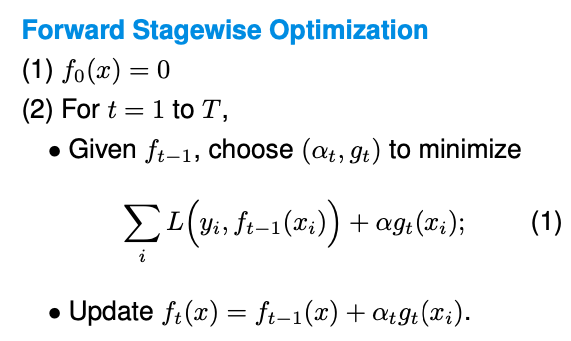
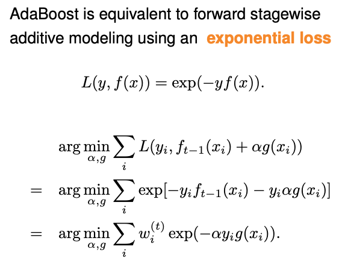

12.5. Forward Stagewise Additive Modeling
Boosting algorithms, particularly the AdaBoost algorithm, might appear mysterious due to their complex nature. To leverage the concept of boosting in various applications, it’s important to understand the mathematical foundations of boosting, which is fundamentally a form of a greedy algorithm.
In the context of boosting, we’re essentially looking to combine multiple functions into a stronger model. Consider an additive model:
where \(g_t(x)\) is a classifier or a regression function.
It is challenging to optimize this function, since we have to consider not only the alpha values but also optimize the functions g themselves. The approach often used here is Forward Stagewise Optimization, which begins with a baseline of no functions, then incrementally adds to the model by optimizing one weight and one function at a time, keeping previously selected elements fixed.
{kind=link}
Boosting algorithms can take various forms, depending on the choice of the base model \(g_t\), the choice of the loss function \(L(y, f(x)),\) and how optimization is done.
For instance, with AdaBoost, we employ an exponential loss function and, at each stage, we look for the optimal \(\alpha\) and g that minimize this loss. This is relatively straightforward when done sequentially. AdaBoost, specifically, uses this approach along with a mechanism for adjusting the weights of the classifiers based on their performance.
{kind=link}
If we dive into the details, at each iteration t in AdaBoost, instead of optimizing over both \(\alpha\) and g, AdaBoost just randomly picks a classifier g_t, and then optimize over \(\alpha\).
When doing the optimization with exponential loss, the effect of the previous (t-1) functions becomes updating the weights for each data point. Let \(\epsilon_t\) denote the corresponding weighted empirical error rate, then the optimal \(\alpha\) is in closed form:
With regression, the process is similar but typically involves a square loss function. At the t-th iteration,
The effect of the previous (t-1) functions becomes partial residuals, and the goal is to fit the new function to the current partial residuals \(r_{it}.\)
For many other loss functions, we don’t have such a simple form for the effect of the previous (t-1) functions, then we can approximate \(L(y, f_{t-1}(x) + \alpha g_t(x))\) via, for example Taylor expansion. This approach is central to gradient boosting methods.
It’s important to note the differences between various boosting algorithms. For example, GBM and XGBoost perform differently in handling the optimization process. GBM directly uses the gradient as the pseudo-residual to fit a regression tree, while XGBoost involves a more complex formulation. Furthermore, there are considerations for handling categorical variables, as seen with CatBoost, which is designed to effectively deal with categorical data without the need for extensive pre-processing like one-hot encoding.
In summary, while the underlying theory of boosting is crucial for a deep understanding, many practitioners value these algorithms for their ‘black-box’ utility: you configure the base models, select parameters, and let the algorithm do the heavy lifting, yielding powerful predictive models.